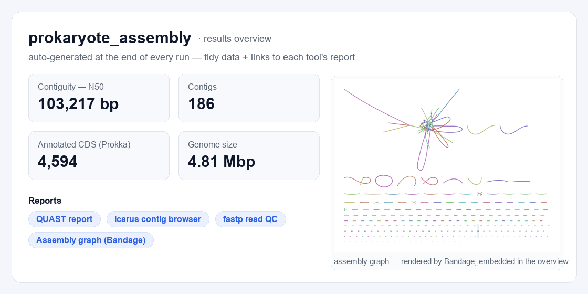
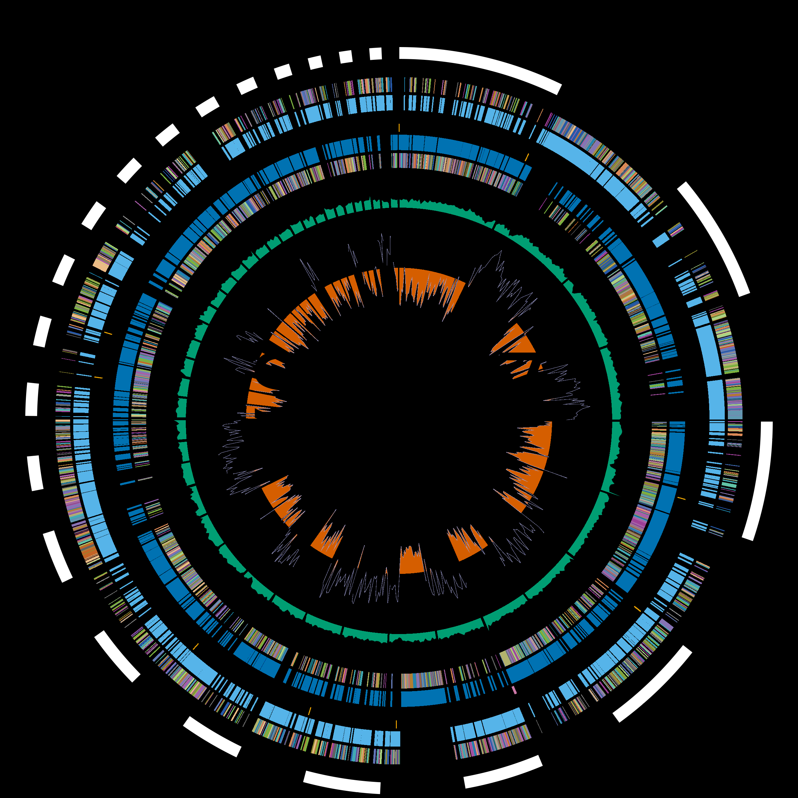

An SDK + cookbook that runs real analyses on your own machine — every tool a digest-pinned Docker BioContainer, every run self-documenting. No cloud account, no lock-in.
# assemble + annotate a genome, end to end $ bioflow recipe run prokaryote_assembly \ --r1 reads_R1.fastq.gz --r2 reads_R2.fastq.gz --out ./run ✓ fastp → SPAdes → QUAST → Prokka → GenoVi genome map ✓ provenance.json + ro-crate-metadata.json written ✓ overview → run/results/overview.html
Most tools optimise for speed. bioflow optimises for the thing that actually matters in research — being able to reproduce, audit, and explain what you ran.
Every container is pinned by image digest, every run records input SHA-256 + commands + image digests as an RO-Crate. Unchanged inputs hit the cache.
20 hand-written recipes, a nightly real-tool integration matrix, and a guard that statically catches “wrong image” bugs before they ship.
Your workstation with Docker, or an HPC cluster with Apptainer/Singularity — no daemon needed. Podman and GPU pass-through supported.
MIT-licensed, on PyPI and bioconda. No black box: read every recipe, swap any tool, and an optional privacy-first LLM helper stays off by default.
One CLI line orchestrates a chain of single-tool containers over a shared workspace — bioflow never installs a bioinformatics binary on your host.
Call one curated pipeline, or compose your own with the
@stage / @pipeline SDK in Python.
Stages run as sibling BioContainers pinned to a
digest — fan out across samples with bioflow cohort.
You get analysis-ready tables, full provenance, and an auto-built report that links each tool’s own figures.
From comparative genomics to RNA-seq, assembly, variants, metagenomics, epigenomics, single-cell and proteomics.
bioflow curates field-standard tools, not obscure ones. Here are the most-cited in the recent literature — measured by how often each tool's canonical paper was cited (Europe PMC), refreshed monthly.
Citation counts are a lower bound on real use; the full per-tool table is in the tools reference.
{
"stage": "assemble",
"image": "staphb/spades:4.0.0",
"image_digest": "sha256:…",
"inputs": { "reads": "sha256:9f2c…" },
"command": "spades.py -k auto …",
"started_at": "2026-06-30T07:54:…Z"
}
excerpt from provenance.json
bioflow doesn’t reinvent plotting. It runs the field-standard visual tools as stages and surfaces their own output — a report hub plus the tidy data, so you plot the rest.
One row per sample +
a results.json schema. Load it in R/Python and make any figure.
A metrics table + a circular genome map (GenoVi/Circos), the assembly graph (Bandage), QUAST/Icarus and fastp reports — embedded or linked, never redrawn.
Standard BAM / BED / GFF outputs open straight in IGV — we delegate, we don’t lock you in.


SC117 draft assembly. Rings, outermost to
innermost: contigs (numbered 1–26 by descending size, with a cumulative Mb scale);
protein-coding genes on the forward (+) and reverse (−) strands, coloured by COG functional
category; tRNA / rRNA; GC content (black, deviation from the genome mean); and GC skew
(green / yellow). Only contigs large enough to label are numbered; the full colour key is at
the foot of the figure. Rendered by GenoVi (Circos) from the Prokka annotation as the
pipeline's genome_plot stage — the actual, unedited output of a
bioflow recipe run.pip install bioflowkit
Get started ↗
Requires Python ≥ 3.9 and a reachable Docker (or Apptainer on HPC).